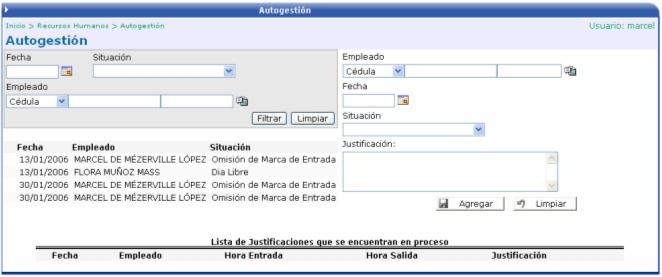

Esta opción funciona igual que la anterior, con la única diferencia de que es para uso de usuarios jefes que requieran hacer una marca justificada para alguno de los empleados que se encuentren a su cargo. Solamente se tiene que seleccionar el empleado, la fecha, la situación y una justificación:
